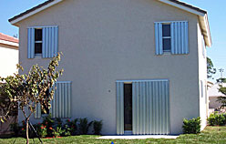

Accordion Shutters
and Aluminum Panels
Hurricane protection is vital in South Florida to guard your property investment. Modern Aluminum Products, Inc. offers several products designed to keep your family and home safe. We offer .040, .050 and .060 gauge mill finish aluminum storm panels and we are one of a very few companies that offer half panels. Steel and clear polycarbonate storm panels are also available. Contact our hurricane protection experts today to arrange for your consultation and estimate!
Aluminum Hurricane Panels
- Inconspicuous Tracks
- Lightweight Panels
- Hurricane Protection
- 15 track styles in white or bronze for all various mounting conditions.
- Tested to withstand the NEW 2001 wind standard for ASCE 7-98 with base speeds of up to 150 mph wind load as well as Dade/Monroe counties with base wind speeds ranging from 110 to 155 mph.
- Tested in accordance with Dade county protocols PA201, PA202 and PA203, which cover impact from wind born debris, wind load and cycle load testing.
- Tested to meet all of the standard building code requirements under the Palm Beach County amendments.
- Tested to meet all Monroe County and Texas Department of Insurance requirements.
Accordion Shutters
- Miami Dade Approved
- Aesthetically Pleasing
- Optimum Hurricane Protection
- Closes with Ease
- Provides Security
- 6.8 system has one of the tightest blade stacks in the industry; the blades in the open position only take up one inch per foot including center mate.
- The 6.8 system features an offset screw boss that allows for lubrication of the assembly screw and isolates the hinge from the corrosion effect from dissimilar metal contact.
- Assembly screws are JS-500 plated over 410 HT with zinc for better life span and increased durability.
- Uses significantly heavier track system than the competition.
- Uses a singular center mate, for less inventory requirements.
- Fast and simple locking procedure – close centers and push in key lock. Most other shutters require a six-step locking procedure.
- No lock bars required.
- Available in four colors – White, Bronze, Ivory and Beige.
- Available in a High Rise (H.R.) system which shares same components as the 6.8 accordion system with exception of blades, centers and starters.
- The H.R. system is used for high rise structures, which require extremely high wind loads.
- The H.R. system is also capable of spans up to 15’6”.
Payment Information
Financing Available